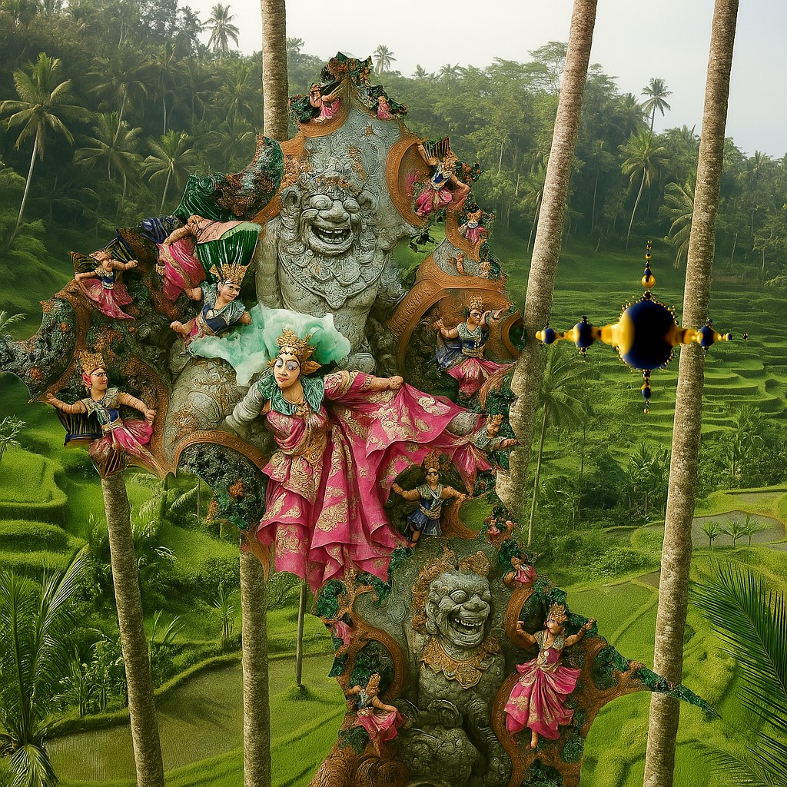

🖼️ Sensitive Prologue – Poetic Introduction
🗺️ Interactive map

🕉️ Room 1 — Hampi Market

Elements and Links
- Mystical Chariot of Hampi
- Mandalas and flowing fabrics
- 🎶 Soundscape: Musical pillars of the Vithala temple
🎧 Subtitles & Transcription – Room 1: Hampi
- [Gentle rustling of fabric — vibrant hues sway]
- [Distant chatter of market-goers — lively atmosphere]
- [Rhythmic tones of the musical pillars — sacred resonance]
The market hums with life. Fabrics sway, their colors vivid even in the mind's eye. The chariot stands timeless, a symbol of Hampi's rich history. The musical pillars sing, their notes weaving stories of devotion and artistry.
Narration
Imagine a bustling market in Hampi, where the mystical chariot stands as a centerpiece. The fabrics flow gently in the breeze, their vibrant colors creating a kaleidoscope of hues. The sound of the musical pillars resonates, each note painting an auditory picture of the temple's grandeur.
Soundscape Enrichment
Listen to the temple’s resonance, where each pillar sings the story of a people. The sounds of the market, the whispers of fabric, and sacred notes wrap you in a sonic fresco.
🌺 Room 2 — Bali the Beautiful Island

Elements
- 🌾 Sacred rice fields and offerings
- 🕉 Hindu temples and spirals of incense
🎧 Subtitles & Transcription – Room 2: Bali
- [Insect chorus — vibrant microscopic life in the rice fields]
- [Breath of wind through the rice terraces — the earth’s quiet respiration]
- [Echoes of gamelan — spiritual pulse in rhythmic devotion]
The rice fields stretch endlessly, their terraces a testament to harmony with nature. Offerings of flowers and incense bring color and fragrance to the scene. Temples stand as guardians of tradition, their presence a reminder of Bali's spiritual essence.
Narration
Picture the sacred rice fields of Bali, their terraces cascading like emerald waves. Offerings of flowers and incense adorn the landscape, each a prayer to the divine. The temples rise majestically, their intricate carvings telling stories of devotion and tradition.
Soundscape Enrichment
Let yourself be carried by gamelans and offering chants, like a prayer dancing in the air. Each sound is a caress, each silence a sacred breath.
🌾 Room 3 — Flores Island

Elements and Links
- 🌺 Komodo dragons and pink beaches
- 🌊 Coral reefs and underwater wonders
- Neoclassical music inspired by rice
🎧 Subtitles & Transcription – Room 3: Flores
- [Gentle lapping of waves — soothing rhythm]
- [Rustle of leaves — vibrant foliage]
- [Distant calls of exotic birds — untamed spirit]
Flores Island is a haven of natural wonders. Komodo dragons embody the island's untamed spirit, while pink beaches and coral reefs showcase its vibrant beauty. The sounds of nature envelop you, painting a picture of serenity and adventure.
Narration
Envision the rugged beauty of Flores Island, where Komodo dragons roam freely and pink beaches shimmer under the sun. Beneath the waves, coral reefs burst with color, teeming with marine life.
Soundscape Enrichment
Hear the waves speaking to the reefs, the dragon’s steps on the sand, and the cries of birds keeping watch. A wild symphony, woven from mystery and beauty.
🏔️ Room 4 — Peru’s Sacred Valley

Elements and Links
- Majestic Andes and ancient terraces
- Machu Picchu and Inca heritage
- Sacred Icaro — Amazonian shamanic chant
🎧 Subtitles & Transcription – Room 4: Peru
- [Whisper of the wind through the mountains — timeless serenity]
- [Distant sound of flowing rivers — life's pulse]
- [Echoes of history — profound legacy]
The Sacred Valley is a place of awe and wonder. The Andes dominate the horizon, while Machu Picchu invites you to explore its mysteries. Encircling this iconic site are concentric golden patterns reminiscent of cathedral adornments, adding a divine aura to the scene. The sounds of nature and history intertwine, offering a glimpse into the soul of Peru.
Narration
Imagine the Sacred Valley of Peru, where the Andes rise majestically and ancient terraces tell stories of agricultural ingenuity. Machu Picchu stands as a testament to Inca heritage, its stone structures blending seamlessly with the natural landscape. Encircling this iconic site are concentric golden patterns reminiscent of cathedral adornments, adding a divine aura to the scene.
Soundscape Enrichment
The Andes whisper legends in the wind, and ancient voices echo between the stones. Close your eyes: you are at the heart of Peru’s sacred breath.
🏝️ Room 5 — The Seven Colored Earths of Mauritius

Elements and Links
- Seven-Colored Earth of Chamarel
- Lagoon of Île aux Cerfs
- Mauritian Creole Hymn – Holy Spirit kan to la
🎧 Subtitles & Transcription – Room 5: Mauritius
- [Ocean waves gently lapping the shore]
- [Tropical birds singing in the canopy]
- [Soft waterfall echoing through the rocks]
A peaceful lagoon stretches under the morning sun. Tropical birds call from the dense foliage, while a gentle waterfall trickles nearby. The air is warm, filled with the scent of salt and hibiscus. This is Mauritius — an island breathing between sky and earth.
Narration
Imagine a tranquil lagoon surrounded by lush vegetation. The water shimmers in turquoise tones, while tropical birds weave melodies overhead. A small waterfall flows gently over volcanic rocks, adding rhythm to the silence. Mauritius reveals itself as a sanctuary of light, sound, and breath.
Soundscape Enrichment
Peaceful lagoon, tropical songs and mineral waterfall — an island breathing between sky and earth.
🐠 Room 6 — The Atoll of a Thousand Blues

Elements
- A Thousand Blues of the Ocean
- Coral Beaches
🎧 Subtitles & Transcription – Room 6: Maldives
- [deep ocean ambience]
- [whale song echoing in the distance]
- [gentle swish of fish swimming]
Beneath the surface of a turquoise lagoon, silence reigns. Whales sing in the distance, their calls resonating through the deep. Schools of fish glide in synchronized motion, weaving through coral gardens. The Maldives breathe in the echo of blue — a sanctuary of depth and serenity.
Narration
Imagine descending into the calm waters of a Maldivian atoll. The light fades into shades of blue as marine life surrounds you. A whale’s distant song pulses through the depths, while fish shimmer like living constellations. Coral formations rise like underwater cathedrals, silent and sacred.
Soundscape Enrichment
Whispers from the deep, whale songs, and the silent ballet of fish — the atoll breathes in the echo of blue.
🛕 Room 7 — Mysteries of Laos & Cambodia

Elements
- Kuang Si Waterfall — turquoise waters and sacred forest
- Banteay Srei Temple — stone lacework and Khmer memory
🎧 Subtitles & Transcription – Room 7: Laos-Cambodia
- [sacred bells echoing through flooded forest]
- [Khmer chant rising from ancient stones]
- [gentle rain falling on floating rooftops]
In the heart of a flooded forest, sacred bells shimmer in the mist. Khmer chants rise from moss-covered temples, echoing through time. Rain falls gently on floating rooftops, blending nature and memory. This is the soul of Laos and Cambodia — a landscape of silence and reverence.
Narration
Imagine walking through a forest where water laps at ancient roots. Bells ring softly from hidden shrines, and Khmer voices drift like incense. The rain taps gently on wooden roofs, as if whispering forgotten prayers. Laos and Cambodia unfold as a sacred tapestry of sound and stone.
Soundscape Enrichment
Sacred bells in the flooded forest, Khmer chants rising from ancient stones, and rain whispering on the rooftops of Tonle Sap.
🌄 Room 8 — California between ocean and desert

Elements
- Death Valley — spirales minérales
- Santa Barbara — brumes dorées
🎧 Subtitles & Transcription – Room 8: California
- [Le tram s’élance dans les rues suspendues de San Francisco]
- [Le vent du désert murmure entre les dunes]
- [Et les vagues de Malibu viennent clore le souvenir]
A tram glides through the suspended streets of San Francisco. The desert wind whispers between the spiraling dunes of Death Valley. Golden mist rolls over the waves of Santa Barbara. This is California — a land of contrasts, where motion becomes memory.
Narration
Imagine a tram climbing steep hills, its bell echoing through fog. The desert stretches wide, sculpted by wind into mineral spirals. At the edge of the Pacific, waves shimmer beneath golden mist. California unfolds as a journey between silence and surf, stone and sky.
Soundscape Enrichment
The tram glides through the suspended streets, The desert wind whispers between the dunes, And the waves of Santa Barbara bring the memory to a close.